TrenchBoot OpenQA user guide¶
OpenQA¶
OpenQA is a tool for performing automated testing of operating systems developed by SUSE. It is used by multiple Linux distributions like OpenSUSE, Fedora and QubesOS.
The results of TrenchBoot automated tests can be viewed on the project's OpenQA instance.
Usage¶
The website allows anyone to freely monitor all the details about the tests run, including:
- configuration variables
- collected logs
- screenshots and a video recording of the screen for the duration of a test
- the results and the reasons behind fails
Anyone can login to the website via GitHub, but only the authorized accounts are able to:
- run the tests
- create new tests
- modify any settings
- add new devices
Navigation¶
The main page of the OpenQA website shows a summary of the most recent test runs.
The tests are organized into Job Groups, like "Qubes". The test groups contain Products, like "Build4.2.3". Each Product consists of multiple Test Suites. On the main page every distinct Product has a progress bar showing how many Test Suites have passed, are running, are finished and were skipped.
| 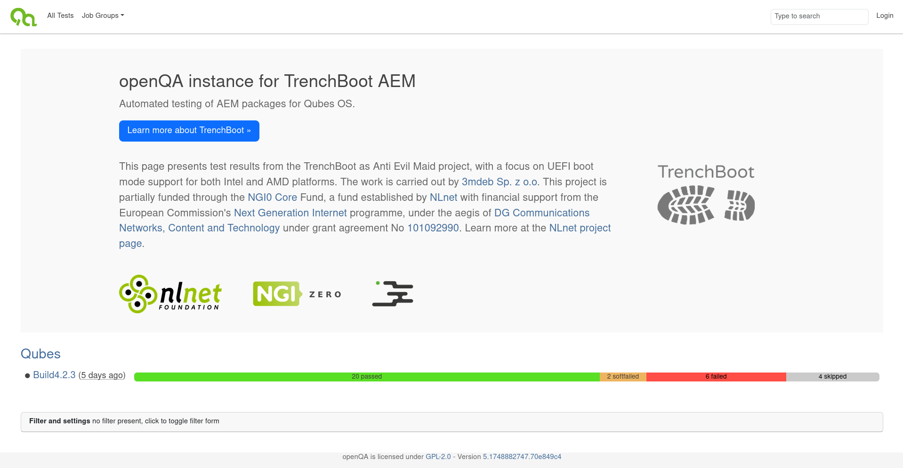 |
|---|
| Image of the main page, show job groups, products and test suite progress |
From this page there is a couple of options for further navigation to access more precise data.
Job Group¶
Job Groups simply a way to organize all of the maintained Products into thematic categories.
Clicking on the name of a Job Group shows its details. Most importantly all of the historical Products that were published as a part of the Job Group. In addition to that, authorized users can leave comments about the Job Group there.
| 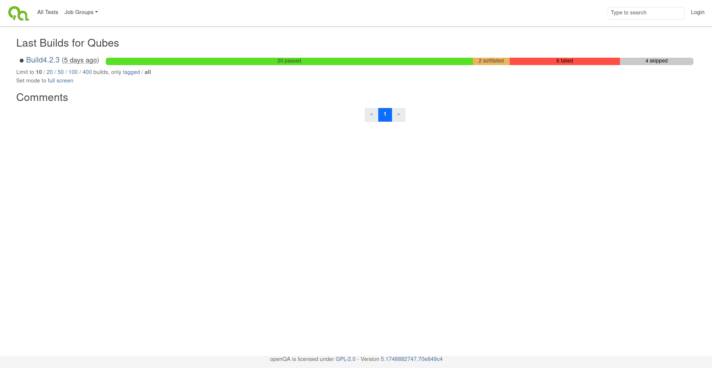 |
|---|
| Image of the Job Group view |
Product¶
A Product represents one run of a set of test suites with given parameters. The name of each product consists of the following parts:
- The name of the tested OS distribution - to run tests on every maintained distribution
- The version - to allow running the tests on every new release
- The flavor - to allow testing every flavor of the OS separately
- The hardware architecture - to run on every supported architecture
Testing TrenchBoot requires to cover all of the supported hardware platforms, not only run a single test per hardware architecture. For this reason the Flavor field of a Product is used a bit unconventionally. At this moment TrenchBoot does not consist of multiple Flavors and the field is used to determine:
- on which hardware platform the tests were performed
- whether it was installed on a Legacy or an UEFI BIOS
| 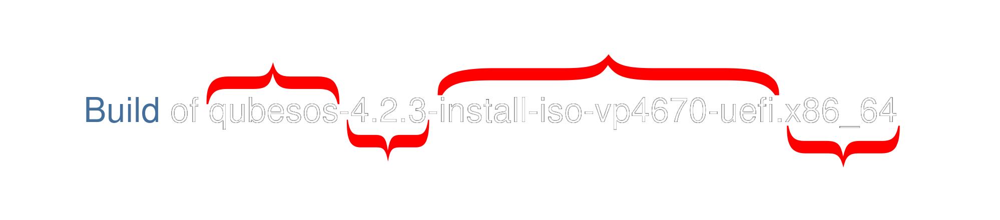 |
|---|
| Product name made of four sections |
Clicking on a Product from the main page, or the Job Group details page shows the summary of the Product and a list of the Test Suites associated with it.
| 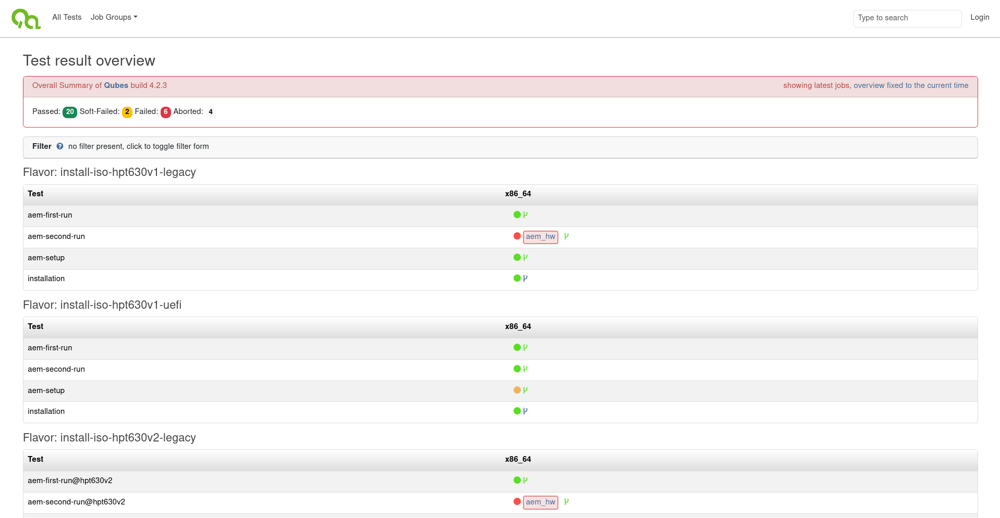 |
|---|
| Image of a product view with list of tests |
Test Suite¶
Test Suites are the essence of the OpenQA web panel. Next to every test suite you can see a small colorful circle informing about the status of the Test Suite. The most common statuses are:
- Gray - Skipped or Canceled (can be disambiguated via a tooltip text)
- The test was decided to not be performed based on the results of other tests, like its dependencies failing
- The test was canceled by the user before finishing
- Green - Pass
- The test passed without any issues
- Red - Fail
- The test encountered a critical issue, the testing is stopped
- Yellow - Soft Fail
- The test encountered a non-critical issue, the testing may continue
By clicking on the status circle icon informing on the status of the Test Suite, the details of the selected Test Suite can be accessed.
| 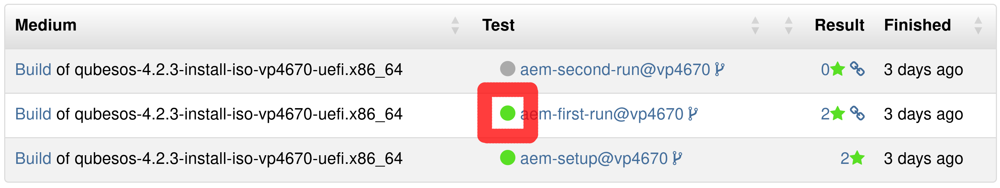 |
|---|
| Image of the circle to press, which is very small and a bit unintuitive, marked with a red rectangle |
When accessing the Test Suites from the All Tests view shown above, you can also click on the blue Test Suite name to access the details. On most other pages pressing the circle is the only way to do so.
Upon doing so the page of the selected Test Suite run as a part of a Product will be shown. It contains a short summary of the Test Suite and a tab bar containing a couple tabs with more details.
Details Tab¶
The default tab shown when selecting a finished Test Suite is its Details tab. It contains a summary of all of the Tests being a part of the Test Suite and their statuses.
Every single test consists of one or more Asserts, which are used to determine whether the test Passes or Fails. The Details page shows the proofs for every Assert during a test. The proofs are:
- screenshots, which are being asserted by comparing selected parts of the screen to the expected outcomes
- text logs, compared to expected outputs
| 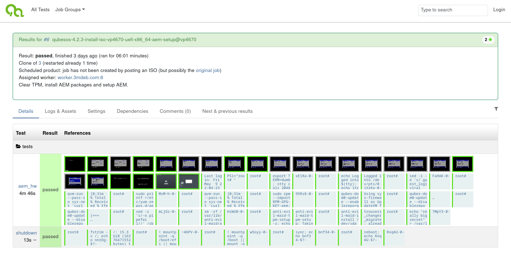 |
|---|
| The details tab |
The details of any assert and the reason for pass or fail can be viewed by clicking on the corresponding box in any Test Suite.
| 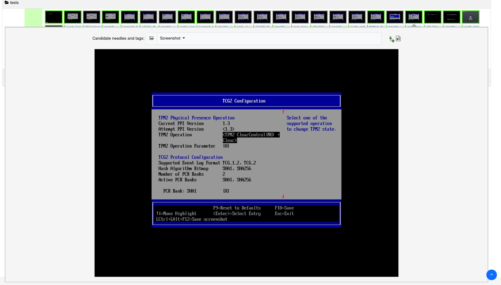 |
|---|
| Image of a screenshot needle assert selected |
| 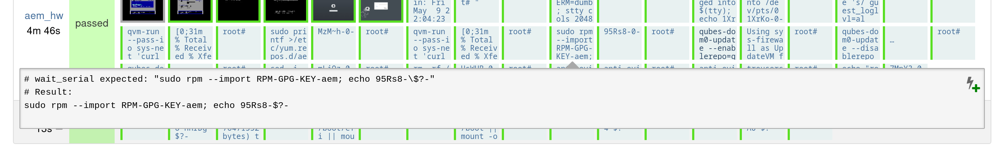 |
|---|
| Image of a text needle assert selected |
Logs & Assets Tab¶
The Logs & Assets tab contains all of the downloadable content created during the Test Suite. This includes:
Video- A video recording of the screen for the whole duration of the Test Suiteautoinst-log.txt- Logs from the testworker-log.txt- Logs created by the OpenQA worker process managing the tested devicevars.json- A JSON file containing all of the configuration variables used to control the execution of the Test Suiteserial0.txt- The serial port output from the tested deviceserial_terminal.txt- The terminal output from text-based tests in the terminal
| 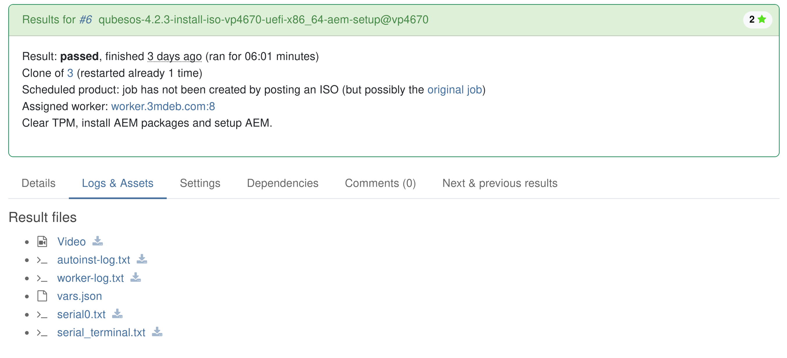 |
|---|
| The Logs & Assets tab |
Settings Tab¶
The Settings tab visually shows the most important configuration
variables that affected the Test Suite. It is a subset of what's available
in the vars.json file from the Logs & Assets Tab
| 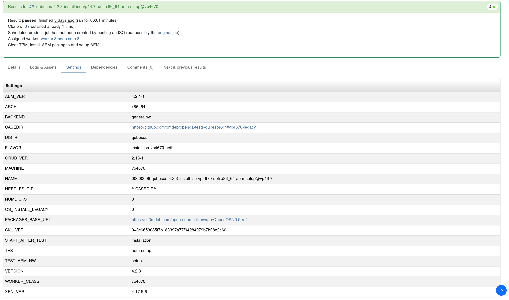 |
|---|
| The Settings tab |
Dependencies Tab¶
The test suites are run in parallel by default. The Dependencies tab shows how the Test Suite depends on other suites using a schematic. The suites, upon which the Test Suite depends must be finished before it can be run. The order of execution follows the direction of the arrows.
| 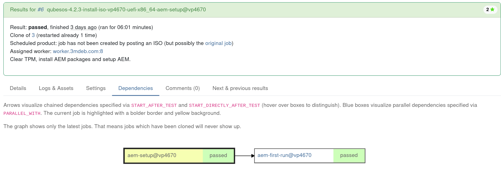 |
|---|
| The Dependencies tab |
Comments Tab¶
The comments tab gives the authorized users a place to discuss the results of a test suite. Depending on whether a discussion has arisen in the exact suite it might not contain any useful information.
| 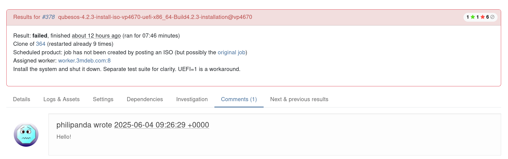 |
|---|
| The Comments tab |
A test containing comments is marked with a blue speech bubble:
| 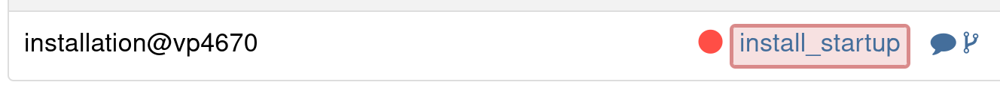 |
|---|
| A test containing comments |
Next & Previous Results Tab¶
The Next & Previous Results tab gives a useful insight about the history of regression and fixes regarding the feature tested by the test suite. It shows how the selected Test Suite worked on other Products - historical, and future ones if the Product in which the selected Test Suite was run is not the newest one released.
| 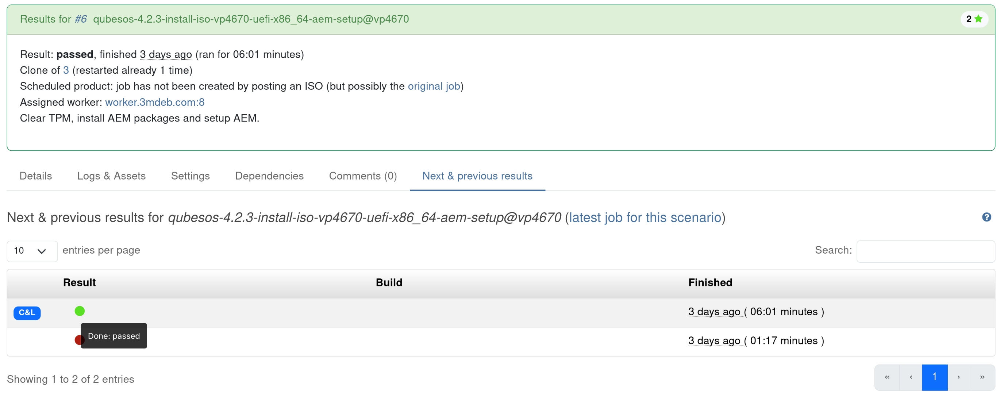 |
|---|
| The Next & Previous results tab |
All Tests Tab¶
The All Tests tab visible on the topmost part of every page gives access to a view of the most recent test suites running and the historical runs in order, as well as tests that are currently in progress.
Every test suite entry lists the Product for which the suite is run, the name of the suite and its status. Pressing the colorful status circle enters the test suite page exactly like when doing so from the product details page.
| 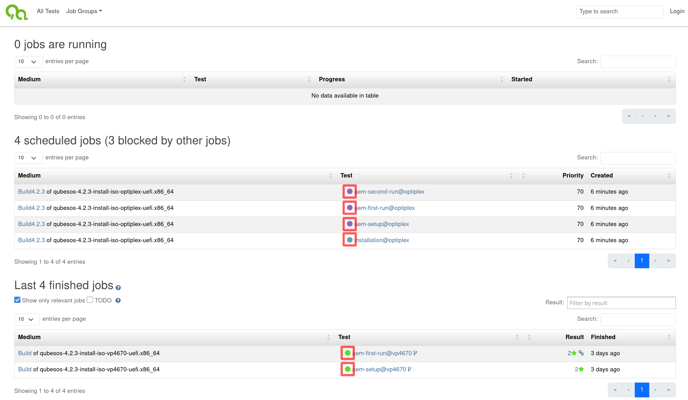 |
|---|
| The All Tests tab, status circles marked with red rectangles |
Job Groups Tab¶
The Job Groups tab in the uppermost part of every page contains a drop-down list of all the Job Groups existing on this OpenQA instance. The Job Groups which don't contain any Products are not visible on the OpenQA homepage, but can be accessed using this tab.
| 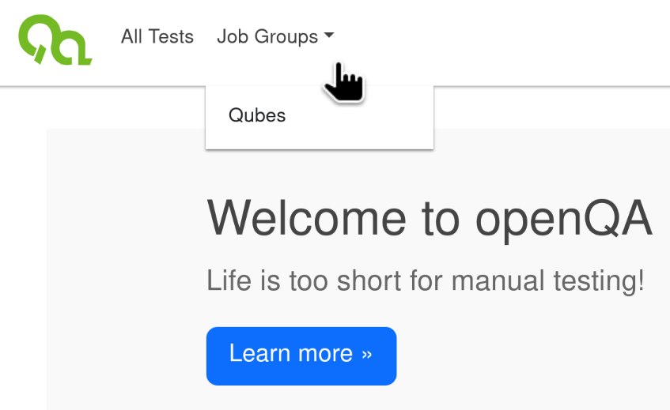 |
|---|
| The Job Groups drop down menu |